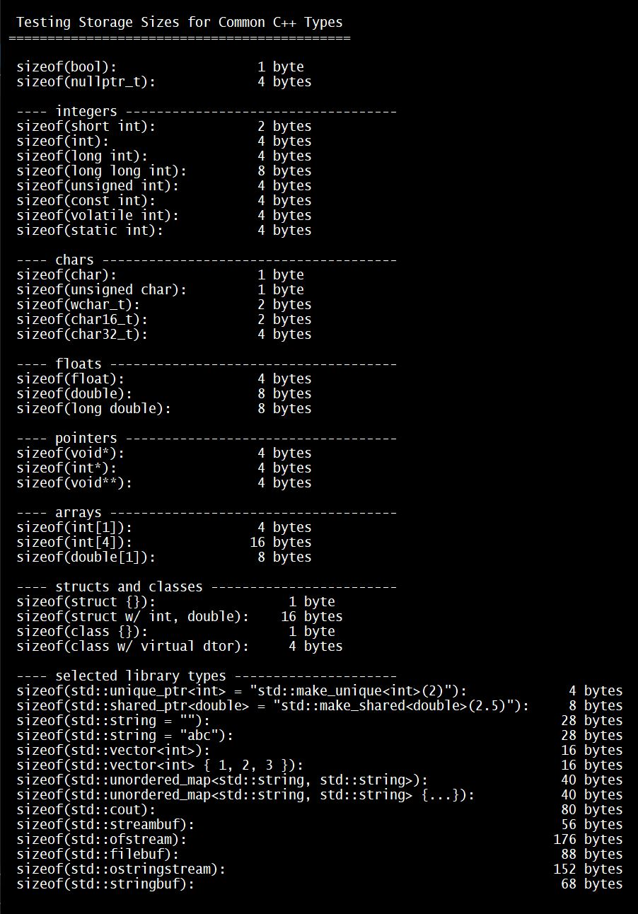

about
Splitter Bar
04/24/2024
Splitter Bar
Content of left element:
Yada yada yada and more yada yada yada. Yada yada yada and more yada yada yada. Yada yada yada and more yada yada yada. Yada yada yada and more yada yada yada. Yada yada yada and more yada yada yada.
Yada yada yada and more yada yada yada. Yada yada yada and more yada yada yada. Yada yada yada and more yada yada yada. Yada yada yada and more yada yada yada. Yada yada yada and more yada yada yada.
Content of right element
